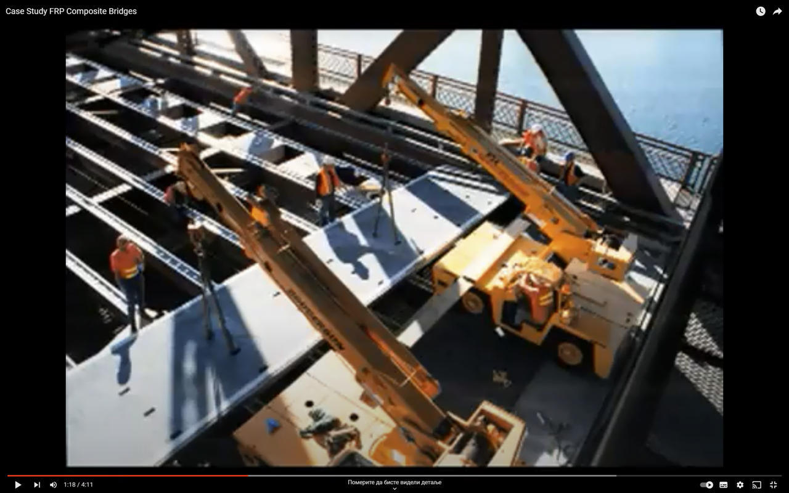
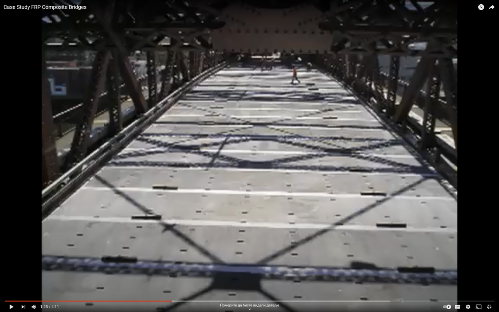

Предлог тема
- Друмски мост АБ континуалног система носача сандучастог попречног пресека
- Друмски мост са косим кабловима постављеним у једној равни спрегнутог затвореног попречног пресека челик – бетон
- Висећи друмски мост отвореног попречног пресека са пет челичних подужних носача непотпуне флексибилноcти
- Железнички мост са косим кабловима постављеним у две равни спрегнутог попречног пресека челик – бетон
- Железнички мост АБ континуалног система носача сандучастог попречног пресека
- Железнички мост челичног континуалног система носача са сандучастим попречним пресеком
- Железнички мост АБ континуалног система са пет подужних носача
- Матрица крутости призматичног штапа у равни на основу „P-Delta“ поступка
- Итеративни поступак оцене основног облика осциловања равних линијских носача
- Прилог анализи померања система равних линијских носача ослоњених на виброизолациона лежишта
Дипломски радови
- Бојан ТОКИЋ (17.12.2012)
- Мирко КЕСИЋ (14.06.2016)
- Никола МАКСИМОВИЋ (05.09.2016)
Друмски мост преко канала ДТД на јужној тангенти обилазнице око Кикинде
Друмски надвожњак преко железничке пруге на северној тангенти обилазнице око Кикинде
Друмски мост преко источног латералног канала на јужном булевару у Пелагићеву
Завршни радови - основне академске студије
Завршни радови - мастер академске студије
- Немања БРАЛОВИЋ (07.10.2016) Тема: Рачунарско моделирање друмског моста при симулацији покретног оптере-ћења са гледишта критеријума упот-ребљивости
- Маријан МАКСИМОВИЋ (05.10.2018) Тема: Рачунарско моделирање челичне хале при симулацији дејства ветра са гледишта критеријума носивости
- Анђела БИОРАЦ (29.10.2018) Тема: Рачунарско моделирање АБ друмског моста при симулацији дејства земљотреса са гледишта критеријума употребљивости
- Војислав ГАВРИЛОВИЋ (28.02.2020)
Title: Computer modeling of the road bridge in the simulation moving load from the view of usability criteria
Title: Computer modeling of the steel of the hall in the simulation effects of the wind from the viewpoint of criteria capacity
Title: Computer modeling of RC road bridge in the simulation of earthquake effects from the point of view of the criteria of usability
Рачунарско моделирање железничког челичног решеткастог моста са гледишта критеријума носивости и употребљивости


ZarnitsaTeam: Case Study FRP Compo-site Bridges |01:18|

ZarnitsaTeam: Case Study FRP Compo-site Bridges |01:25|